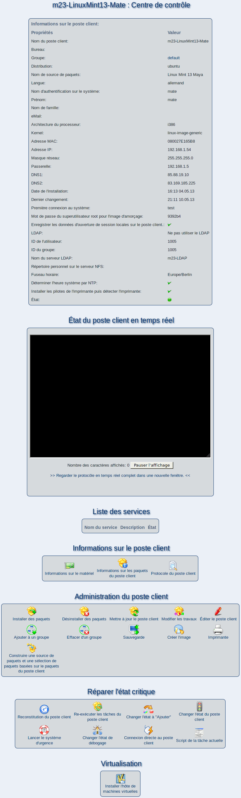

suivant:
Remarques sur la virtualisation
monter:
Administrer des clients
précédent:
Astuces
Table des matières
Centre de contrôle
Le centre de contrôle vous permet d'accéder aux informations concernant le poste client et vous offre une grande variété d'outils d'administration.

Sous-sections
Remarques sur la virtualisation
Démarrer, suspendre et arrêter un poste client m23 virtuel
Établir un hôte de VM
root 2015-04-30